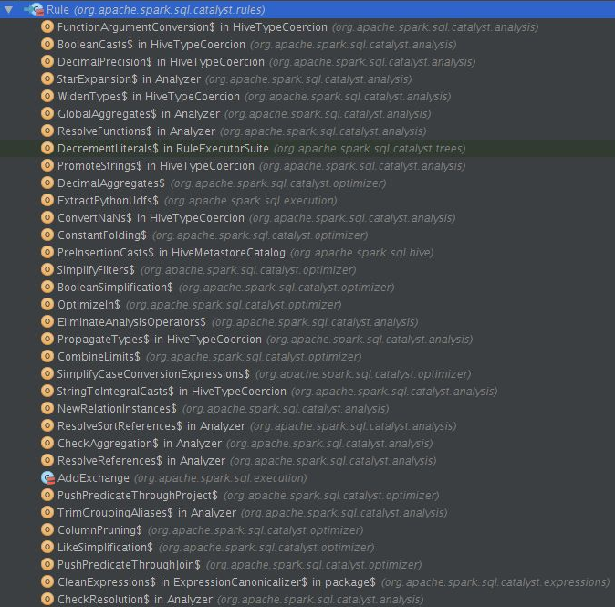

Rule
Rule类是抽象类，理解为一种规则，这种规则会应用到Logical Plan 从而将UnResolved 转变为Resolved。调用apply方法可以进行Tree的transformation。
abstract class Rule[TreeType <: TreeNode[_]] extends Logging {
/** Name for this rule, automatically inferred based on class name. */
val ruleName: String = {
val className = getClass.getName
if (className endsWith "$") className.dropRight(1) else className
}
def apply(plan: TreeType): TreeType
}
SparkSQL中为Catalyst定义了各种各样的Rule，如下图（不全），随着SparkSQL的不断优化，里面的Rule会越来越多。

Strategy
最大的执行次数，如果执行次数在最大迭代次数之前就达到了fix point，策略就会停止，不再应用了。
/**
* An execution strategy for rules that indicates the maximum number of executions. If the
* execution reaches fix point (i.e. converge) before maxIterations, it will stop.
*/
abstract class Strategy { def maxIterations: Int }
Once
执行且仅执行一次
/** A strategy that only runs once. */
case object Once extends Strategy { val maxIterations = 1 }
FixedPoint
相当于迭代次数的上限。
/** A strategy that runs until fix point or maxIterations times, whichever comes first. */
case class FixedPoint(maxIterations: Int) extends Strategy
Batch
批次，这个对象是由一系列Rule组成的，采用一个策略，目前有两种策略Once和FixedPoint
/** A batch of rules. */
protected case class Batch(name: String, strategy: Strategy, rules: Rule[TreeType]*)
RuleExecutor
Rule具体的实现在RuleExecutor中。
通过定义batchs，可以模块化地对Tree进行transform操作。Once和FixedPoint分别可以对Tree进行一次操作或多次操作，例如对某些Tree进行多次迭代操作的时候，达到FixedPoint次数迭代或达到前后两次的树结构没变化才停止操作。
abstract class RuleExecutor[TreeType <: TreeNode[_]] extends Logging {
/**
* An execution strategy for rules that indicates the maximum number of executions. If the
* execution reaches fix point (i.e. converge) before maxIterations, it will stop.
*/
abstract class Strategy { def maxIterations: Int }
/** A strategy that only runs once. */
case object Once extends Strategy { val maxIterations = 1 }
/** A strategy that runs until fix point or maxIterations times, whichever comes first. */
case class FixedPoint(maxIterations: Int) extends Strategy
/** A batch of rules. */
protected case class Batch(name: String, strategy: Strategy, rules: Rule[TreeType]*)
/** Defines a sequence of rule batches, to be overridden by the implementation. */
protected val batches: Seq[Batch]
}
触发RuleExecutor启动的是apply函数：
- 首先遍历batches数组
- 依次运行单个batch里面的所有规则
- 直到达到Strtegy里面定义的次数，或者优化前后Logical Plan不再变化
/**
* Executes the batches of rules defined by the subclass. The batches are executed serially
* using the defined execution strategy. Within each batch, rules are also executed serially.
*/
def apply(plan: TreeType): TreeType = {
var curPlan = plan
batches.foreach { batch =>
val batchStartPlan = curPlan
var iteration = 1
var lastPlan = curPlan
var continue = true
// Run until fix point (or the max number of iterations as specified in the strategy.
while (continue) {
curPlan = batch.rules.foldLeft(curPlan) {
case (plan, rule) =>
val result = rule(plan)
if (!result.fastEquals(plan)) {
logTrace(
s"""
|=== Applying Rule ${rule.ruleName} ===
|${sideBySide(plan.treeString, result.treeString).mkString("\n")}
""".stripMargin)
}
result
}
iteration += 1
if (iteration > batch.strategy.maxIterations) {
// Only log if this is a rule that is supposed to run more than once.
if (iteration != 2) {
logInfo(s"Max iterations (${iteration - 1}) reached for batch ${batch.name}")
}
continue = false
}
if (curPlan.fastEquals(lastPlan)) {
logTrace(
s"Fixed point reached for batch ${batch.name} after ${iteration - 1} iterations.")
continue = false
}
lastPlan = curPlan
}
if (!batchStartPlan.fastEquals(curPlan)) {
logDebug(
s"""
|=== Result of Batch ${batch.name} ===
|${sideBySide(plan.treeString, curPlan.treeString).mkString("\n")}
""".stripMargin)
} else {
logTrace(s"Batch ${batch.name} has no effect.")
}
}
curPlan
}